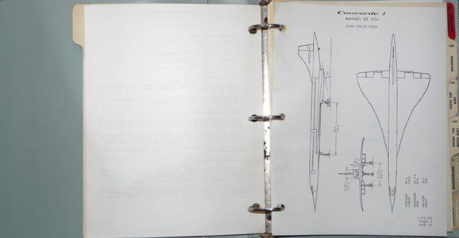
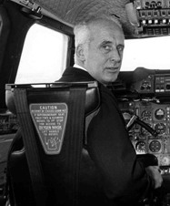
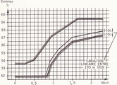
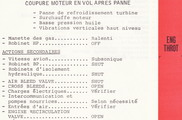
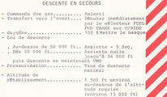
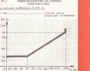

Ce manuel de vol du premier Concorde de série (serial number 201, immatriculation
F-WTSB) a été utilisé
par les pilotes du CEV (Centre d'Essais en Vol) ; voir les mises à jours qu'ils ont effectuées
ici
.

Pierre Dudal
Gilbert Defert
Ce document illustre parfaitement les missions assignées à cet avion en 1973-1974 :
effectuer des missions d'endurances avec un Concorde quasi représentatif de la définition série,
mais aussi de participer à la mise au point finale de ce qui ne fonctionnait pas encore correctement.
Ce travail durera bien plus longtemps que prévu, de nombreux problèmes de mise au point étant apparus par la
suite.
Comparé aux documents qui seront utilisés en service par Air France, on se rend compte très rapidement
que le domaine de vol était bien plus étendu pendant les missions sur SB. Cela est bien illustré par cette page
qui montre que cet appareil avait le droit de voler plus vite, jusqu'à mach 2.10 (2.03 en compagnie).
Comme de nombreux problèmes sont apparus au fil du temps, des corrections urgentes étaient régulièrement
apportées
au manuel de vol. A cette fin, des pages de couleur jaune étaient insérées au plus vite pour interdire
ou limiter certaines évolutions de l'avion. Ces pages jaunes ont un grand intérêt historique,
car elles sont le témoignage des problèmes rencontrés à ce stade du développement de Concorde.
Par exemple, cette page qui montre
les problèmes de température du carburant dans les réservoirs,
avec pour conséquence des risques d'explosion en cas de foudre.
Au fil des mises à jour du manuel de vol, les pages jaunes étaient remplacées par des mises à jour
officielles des pages blanches.
Section 2: Limites d'emploi

Section 3.01 : Procédures d'urgences rouge

Section 3.02 : Procédures d'urgences rayées

Section 4 : Procédures anormales

Quelques explications sur le Concorde 201, le premier appareil de série